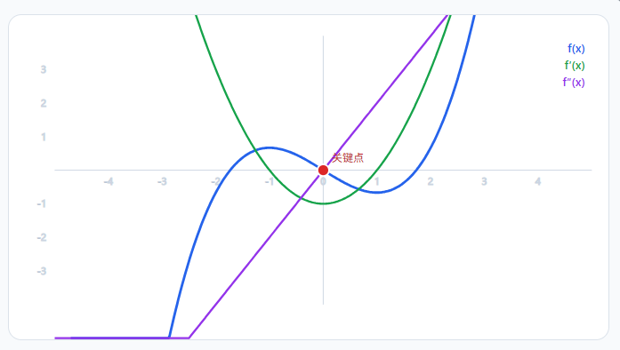
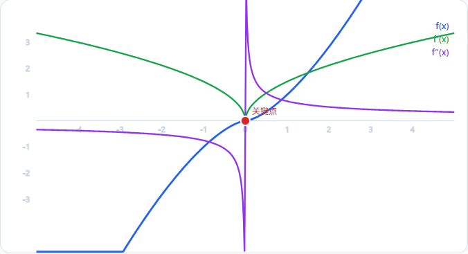

[!NOTE]
本章复习重心导引:一元函数微分学几何应用的考研命题极度集中且技巧性极强，主要包含四大高频王牌考点:
- 单调性与极值点判定:第一、第二充分条件与保号性极速判定，不可导尖点与分段点的极值辨析
- 凹凸性与拐点定位:二阶导数符号改变（穿轴点与二阶导不存在的连续点）与二阶导图像逆推
- 三类渐近线计算大满贯:铅直渐近线（奇点单侧极限）、水平渐近线（$\pm\infty$ 分开检验）与斜渐近线泰勒极速截取法
- 曲率与曲率圆方程:曲率公式 $K = \frac{|y''|}{(1+y'^2)^{3/2}}$、曲率半径 $\rho = \frac{1}{K}$ 及圆心坐标几何直观快速求解
| 题号 | 核心考点与命题类型 | 关键方法与推导模型 | 核心结论 / 答案 | 易错陷阱与反思提示 |
|---|---|---|---|---|
| Q1 | 基本指数函数最小值求解 | 基本均值不等式 $a+b \ge 2\sqrt{ab}$ 或导数驻点法 | $\sqrt{2}$ | 均值不等式需验证等号成立条件 $e^{2x}=1/2$ 是否有实解 |
| Q2 | 指数多项式极值点范围逆推 | 求导解方程 $f'(x)=0$ 得极值点，由极值点小于零建立指数不等式 | $(-\infty, -e)$ | 注意负号取对数时的不等号翻转方向 |
| Q3 | 分段函数分界点处极值与导数辨析 | 去心邻域保负性定极大值单侧极限算左右导数辨析可导性 | (B) 不可导点，极值点 | 可导与极值无充要关系，不可导的折角尖点常是极值点 |
| Q4 | 负指数幂不等式恒成立参数范围 | 导数极值法求函数最小值，或五元加权均值不等式 AM-GM 秒杀 | $\left[\frac{8\sqrt{2}}{3}, +\infty\right)$ | $a \le 0$ 时函数趋于 $-\infty$ 必然不符，必须先定性 $a>0$ |
| Q5 | 二阶导函数图像逆推连续曲线拐点 | 拐点定义:连续曲线上二阶导变号的点，包含穿轴零点与无穷间断变号点 | (C) 3 | 拐点不仅在 $f''=0$ 处，二阶导不存在但原函数连续且变号处也是拐点 |
| Q6 | 复合根式函数拐点与二阶导方程 | 拐点处二阶导必为零，复合函数二阶链式求导代入已知值列方程 | $1$ | 复合函数求导商法则与根式链式求导容易漏除分母 |
| Q7 | 指数对数复合曲线斜渐近线 | $x \to +\infty$ 提取主部化为 $2x + \ln(1-e^{-2x})$ 极速求斜率与截距 | (B) $y = 2x$ | $x \to -\infty$ 时趋于水平渐近线 $y=0$，不能混为一谈 |
| Q8 | 对数复合函数斜渐近线泰勒展开法 | 提取因式 $e$ 后运用 $\ln(1+u) = u + o(u)$ 极速截取截距项 | (C) $y = x + \frac{1}{e}$ | 直接极限法通分计算量大，泰勒展开截取法一步到位 |
| Q9 | 二元二次隐函数在指定点处的曲率 | 隐函数连续两次求导得 $y'$ 与 $y''$，代入曲率标准公式 | $\frac{3\sqrt{2}}{2}$ | 二阶求导时 $xy'$ 的乘积导数负号必须分配到位 |
| Q10 | 曲率圆方程反推二次泰勒展开系数 | 由曲率圆圆心定切线斜率 $f'(0)$，由半径和凹向定 $f''(0) < 0$ | (C) $a=1, b=1, c=-1$ | 圆心在切点下方表示凹向朝下，二阶导必取负值 |
| Q11 | 二阶导保号性推导分式函数单调性 | 构造辅助函数 $h(x)=xf'(x)-f(x)$，求导利用 $f''<0$ 保号性定符号 | (B) 双侧区间均单调减少 | 负半轴上 $x<0$ 乘负二阶导得到正导数，单调性需严谨分段 |
| Q12 | 高阶局部极限保号性判定极值 | 由极限 $k<0$ 知局部去心邻域内 $f(x) = kx^2 + o(x^2) < 0 = f(0)$ | (D) 取得极大值 | $f'(0)=0$ 且局部函数值恒小于端点值，直接定义判定极大值 |
| Q13 | 经典幂指序列最大项比较 | 转化为连续函数 $f(x)=x^{1/x}$ 求导，驻点 $x=e$，比较 $n=2,3$ | (B) $\sqrt[3]{3}$ | 六次方比较 $(\sqrt{2})^6=8 < (\sqrt[3]{3})^6=9$ 秒杀判定 |
| Q14 | 含参极值点数列极限 | 求导求极值点 $\xi_n = n\ln(1+1/n)$，利用第二重要极限取极限 | $1$ | 识别 $n\ln(1+1/n) = \ln(1+1/n)^n \to \ln e = 1$ |
| Q15 | 绝对值对数分式渐近线全景分析 | $x \to 0^+$ 产生铅直渐近线$x \to +\infty$ 极限求斜渐近线 | (A) 有铅直渐近线，也有斜渐近线 | 定义域为 $x>0$，无需考虑负无穷侧 |
| Q16 | 严格凸函数的割线、切线与函数值比较 | 凹凸性几何直观:割线在曲线之上，切线在曲线之下或单调性推导 | (D) $f(1)x > f(x) > f'(0)x$ | 割线斜率 $\frac{f(x)}{x}$ 严格单调递增，乘 $x$ 立刻还原不等式 |
| Q17 | 微分方程关系式在驻点处的二阶导保号 | 将驻点代入微分方程得 $f''(x_0) = \frac{e^{-x_0}-1}{\sqrt[3]{x_0}}$，正负分段均保负 | (B) $x=x_0$ 是极大值点 | 分子分母无论 $x_0$ 正负皆异号，商恒为负，第二充分条件必为极大值 |
| Q18 | 三次多项式极值、增减区间与拐点 | 费马引理求参数 $a=2/3$，一阶导定单调与极值，二阶导定凹凸与拐点 | 极值 $2, \frac{7}{3}$，拐点 $\left(-\frac{1}{2}, \frac{13}{6}\right)$ | 拐点是坐标 $(x_0, y_0)$，不能只写横坐标 |
| Q19 | 含参连续函数最值序列的极限 | 求导得最大值点 $x_n = \frac{1}{n+1}$，代入得 $M(n)$ 后求重要极限 | (B) $\lim M(n) = \frac{1}{e}$ | 最大值点依赖于 $n$，必须把动点代回原式再求 $n \to \infty$ 极限 |
| Q20 | 偶函数双侧根式分式渐近线条数 | 定义域 $|x|>1$，边界 $\pm 1$ 有 2 条铅直渐近线，$\pm\infty$ 有 2 条斜渐近线 | (A) 4 | 负无穷远处 $\sqrt{x^2-1} = -x\sqrt{1-1/x^2}$ 符号极易搞错 |
| Q21 | 复合指数分式水平与铅直渐近线 | 分母零点 $x=0$ 产生铅直渐近线$x \to \pm\infty$ 指数趋于 0 产生水平渐近线 | (D) 既有水平又有铅直渐近线 | $e^{-x^4}$ 在 $x \to \infty$ 时趋向于 0，极限为常数 2 |
| Q22 | 线性乘指数函数斜渐近线泰勒展开 | 泰勒展开 $e^{1/x} = 1 + \frac{1}{x} + \frac{1}{2x^2} + o(x^{-2})$ 极速截取整式项 | $y = 5x + 9$ | 交叉乘积项 $5x \cdot (1/x) = 5$ 与常数项 $4$ 相加得到截距 $9$ |
| Q23 | 根式复合单侧无穷极限渐近线条数 | 奇点 $x=0$ 仅在右侧为无穷大$\pm\infty$ 分别产生 2 条不同斜渐近线 | (C) 3 | $x \to 0^-$ 时 $e^{1/x} \to 0$，左侧不是铅直渐近线 |
| Q24 | 抛物线顶点处曲率圆方程求解 | 顶点处 $y'=0, y''=2$，半径 $R=1/2$，圆心向上平移得 $(0, -1/2)$ | $x^2 + \left(y + \frac{1}{2}\right)^2 = \frac{1}{4}$ | 抛物线开口向上，圆心在切点上方，纵坐标增加半径 |
(基础概念题)题目[1]:基本指数函数最小值求解
函数 $y=e^x+\frac{e^{-x}}{2}$ 的最小值为 ______
答案: $\sqrt{2}$
主要思路:[应用基本均值不等式 $a+b \ge 2\sqrt{ab}$ 秒杀]或[求导确定唯一驻点代入求值]
[1]方法一:基本均值不等式法（高中解法）:
因为对任意实数 $x$，恒有 $e^x > 0$ 且 $\frac{e^{-x}}{2} > 0$，应用算术-几何均值不等式:
$$y = e^x + \frac{e^{-x}}{2} \ge 2 \sqrt{e^x \cdot \frac{e^{-x}}{2}} = 2 \sqrt{\frac{1}{2}} = \sqrt{2}$$
检验等号成立条件:$$e^x = \frac{e^{-x}}{2} \iff e^{2x} = \frac{1}{2} \iff x = -\frac{1}{2}\ln 2$$
由于方程有唯一实数解，等号完全可以取得，故函数最小值为 $\sqrt{2}$
[2]方法二:导数单调性驻点法（大学解法）:
求一阶导数:$$y' = e^x - \frac{1}{2}e^{-x} = \frac{2e^{2x}-1}{2e^x}$$(化简技巧)
令 $y' = 0$，解得唯一驻点 $e^{2x} = \frac{1}{2} \implies x = -\frac{1}{2}\ln 2$
当 $x < -\frac{1}{2}\ln 2$ 时，$y' < 0$，$y$ 单调递减
当 $x > -\frac{1}{2}\ln 2$ 时，$y' > 0$，$y$ 单调递增
故在 $x = -\frac{1}{2}\ln 2$ 处取得全局唯一极小值即最小值:$$y_{\min} = e^{-\frac{1}{2}\ln 2} + \frac{1}{2}e^{\frac{1}{2}\ln 2} = \frac{1}{\sqrt{2}} + \frac{\sqrt{2}}{2} = \sqrt{2}$$
[核心反思]:均值不等式秒杀的关键在于“一正、二定、三相等”，三者缺一不可！
(中档题)题目[2]:指数多项式极值点范围逆推
若函数 $f(x)=e^{-ax}-ex$ 的极值点小于零，则常数 $a$ 的取值范围为 ______
答案: $(-\infty, -e)$ 或 $a < -e$
主要思路:[肯定先要找极值点]
[1]求导寻找可能极值点:$$f'(x) = -a e^{-ax} - e$$
一阶必要条件 $f'(x) = 0$:$$-a e^{-ax} = e \iff e^{-ax} = -\frac{e}{a}$$
[2]讨论参数符号与存在性:
由于指数函数恒正 $e^{-ax} > 0$，等式右侧必须为正:$$-\frac{e}{a} > 0 \implies a < 0$$
在此前提下两边取自然对数:$$e^{-ax} = \frac{e}{-a}\Leftrightarrow[\ln(e^{-ax}) = -ax]=[\ln\left(\frac{e}{-a}\right) = \ln(e) - \ln(-a)= 1 - \ln(-a)]$$
即:$$-ax = 1 - \ln(-a)$$,解得唯一的驻点:$$x_0 = \frac{\ln(-a) - 1}{a}$$
必须检验!![极值第二充分条件]:二阶导数:$f''(x) = a^2 e^{-ax} > 0$（因 $a \ne 0$），故$x_0$确为严格极小值点
[3]依据极值点小于零建立不等式(坑点):
由题意 $x_0 < 0$:$$\frac{\ln(-a) - 1}{a} < 0$$
因为已知 $a < 0$，不等式两边同乘负数 $a$ 必须翻转方向:
$$\ln(-a) - 1 > 0 \iff \ln(-a) > 1 \iff -a > e \iff a < -e$$
综上所述，常数 $a$ 的取值范围为 $(-\infty, -e)$
[易错警示]:不等式求解中，乘除负数变量 $a$ 极易忘记调转不等号方向！另外务必先从 $e^{-ax} > 0$ 锁定 $a < 0$ 的定性大前提
(简单?再看一眼)题目[3]:分段函数分界点处极值与导数辨析
设函数 $f(x)=\begin{cases} \cos|x|-1, & x \le 0, \\ \\ x\ln x, & x > 0, \end{cases}$ 则 $x=0$ 是 $f(x)$ 的 $(\quad)$
(A) 可导点，极值点
(B) 不可导点，极值点
(C) 可导点，非极值点
(D) 不可导点，非极值点
答案: (B)
主要思路:[极值点判断:极值点第一第二充分条件][可导判断:取极限定义法]
[1]极值判定（采用定义法）:
首先计算分界点处函数值:$$f(0) = \cos|0| - 1 = 0$$
当 $x \in \left(-\frac{\pi}{2}, 0\right)$ 时，$|x| = -x > 0$，故:$$f(x) = \cos(-x) - 1 = \cos x - 1 < 0$$
当 $x \in (0, 1)$ 时，$\ln x < 0$，故:$$f(x) = x\ln x < 0$$
综上，在点 $x=0$ 的去心邻域 $\left(-\frac{\pi}{2}, 1\right) \setminus \{0\}$ 内，恒有:$$f(x) < 0 = f(0)$$
由极值第一充分条件定义，点 $x=0$ 是函数 $f(x)$ 的严格极大值点（是极值点）
[2]可导性判定（单侧导数定义法）:
左导数:$$f'_-(0) = \lim\limits_{x \to 0^-} \frac{f(x)-f(0)}{x-0} = \lim\limits_{x \to 0^-} \frac{\cos x - 1}{x} = \lim\limits_{x \to 0^-} \frac{-\frac{1}{2}x^2}{x} = 0$$
右导数:$$f'_+(0) = \lim\limits_{x \to 0^+} \frac{f(x)-f(0)}{x-0} = \lim\limits_{x \to 0^+} \frac{x\ln x - 0}{x} = \lim\limits_{x \to 0^+} \ln x = -\infty$$
由于右导数趋于无穷大（极限不存在），因此导数 $f'(0)$ 不存在
故 $x=0$ 是不可导点，但它是极值点，正确选项为 (B)
[核心反思]:极值的本质是局部函数值的高低对比，完全不依赖于可导性！考研极其偏爱考查不可导尖点（如尖角、折点）作为极值点的情形
(分离参数求导)题目[4]:分离参数求导
已知 $x^2+ax^{-3} \ge \frac{10}{3}\ (x>0)$ 恒成立，则 $a$ 的取值范围为 ______
答案: $\left[\frac{8\sqrt{2}}{3}, +\infty\right)$ 或 $a \ge \frac{8\sqrt{2}}{3}$
主要思路:[分离参数法:将恒成立问题转化为求参数最小值问题]，[求导确定唯一极小值点](亦可用五元均值不等式秒杀)
[1]分离参数 $a$
$x > 0$，原不等式展开: $$a x^{-3} \ge \frac{10}{3} - x^2$$ ,因 $x > 0$，不等号方向保持不变）: $$a \ge \frac{10}{3}x^3 - x^5$$
构造辅助函数: $$g(x) = \frac{10}{3}x^3 - x^5 \quad (x > 0)$$
原命题等价于求 $g(x)$ 在 $(0, +\infty)$ 上的最大值: $$a \ge g(x)_{\max}$$
[2]第二步:求 $g(x)$ 的最大值
求导数:$g'(x) = \frac{10}{3} \cdot 3x^2 - 5x^4 = 10x^2 - 5x^4 = 5x^2(2 - x^2)$
求驻点:令 $g'(x) = 0$，因为 $x > 0$，故 $5x^2 \neq 0$:$$2 - x^2 = 0 \implies x = \sqrt{2}$$
解得区间 $(0, +\infty)$ 内唯一的驻点为 $x = \sqrt{2}$
[3]单调性与最值检验:
当 $x \in (0, \sqrt{2})$ 时，$g'(x) > 0$，$g(x)$ 单调递增；
当 $x \in (\sqrt{2}, +\infty)$ 时，$g'(x) < 0$，$g(x)$ 单调递减。
因此，$x = \sqrt{2}$ 是函数 $g(x)$ 在 $(0, +\infty)$ 上的唯一极大值点，也是全局最大值点。
计算最大值 $g(\sqrt{2})$: $$g(\sqrt{2}) = \frac{10}{3}(\sqrt{2})^3 - (\sqrt{2})^5 = \frac{20\sqrt{2}}{3} - 4\sqrt{2} = \frac{8\sqrt{2}}{3}$$,直接得出参数范围: $$a \ge \frac{8\sqrt{2}}{3}$$
(图像逆推题)题目[5]:二阶导函数图像逆推连续曲线拐点
已知函数 $y=f(x)$ 连续，其二阶导函数的图像如图所示
(图像包含零点 $x_1, x_2, x_3$ 及垂直渐近线 $x=0$，其中 $x_1, x_2$ 穿过横轴，$x_3$ 与横轴相切不穿过，$x=0$ 两侧极限分别为 $+\infty$ 与 $-\infty$），则曲线 $y=f(x)$ 的拐点个数为 $(\quad)$
(A) 1
(B) 2
(C) 3
(D) 4
答案: (C)
主要思路:[拐点定义:曲线上凹凸性改变的点只需连续曲线两侧二阶导异号即可，重点警惕二阶导不存在的点]
[1]明确拐点判定充要条件:
设 $y=f(x)$ 在点 $x_0$ 处连续，若在 $x_0$ 的左侧邻域与右侧邻域内，$f''(x)$ 符号相反，则点 $(x_0, f(x_0))$ 是曲线的拐点
[2]逐点检验二阶导图像变号情况:
情况一:在零点 $x_1$ 处:二阶导曲线穿过横轴，从负变正（或正变负），二阶导发生变号，对应1个拐点
情况二:在无穷间断点 $x=0$ 处:题目明确指出原函数$f(x)$连续，因此点 $(0, f(0))$ 在曲线上存在！
观察二阶导在 $x=0$ 处，左极限为 $+\infty$（正号），右极限为 $-\infty$（负号），跨越 $x=0$
二阶导严格改变了符号，故 $(0, f(0))$ 确为拐点，对应第 2 个拐点
情况三:在零点$x_2$ 处:二阶导曲线穿过横轴发生变号，对应第 3 个拐点
情况四:在零点$x_3$ 处:二阶导曲线与横轴相切，两侧符号相同，并未发生变号，故不是拐点
综上,拐点总个数为3个，选 (C)
[核心反思]:极度易错点在于漏掉 $x=0$！许多考生误以为拐点必须满足 $f''(x)=0$
拐点是凹凸分界点,只要曲线连续且两侧二阶导异号，哪怕该点二阶导甚至一阶导不存在（如尖点处），也绝对是拐点！
但是断点(没有定义的点)即使左右趋势变了也不能算作凹凸点
[普通拐点]:原函数凹凸变化,f'(x)趋势变化,f''(x)正负变化

[一阶导不存在的拐点]:原函数凹凸变化,f'(x)趋势变化,f''(x)正负变化

(拐点逆运算题)题目[6]:复合根式函数拐点与二阶导方程
设函数 $f(x)>0$ 且二阶可导，曲线 $y=\sqrt{f(x)}$ 有拐点 $(1, \sqrt{2})$，$f'(1)=2$，则 $f''(1) =$ ______
答案: $1$
主要思路:[由点在曲线上定 $f(1)$，由二阶可导曲线在拐点处二阶导必为零列方程求解 $f''(1)$]
[1]点在曲线上确定基础函数值:
因为点 $(1, \sqrt{2})$ 在曲线 $y = \sqrt{f(x)}$ 上:$$\sqrt{f(1)} = \sqrt{2} \implies f(1) = 2$$
[2]复合求导计算曲线的二阶导数:
一阶导数:$$y' = \frac{1}{2\sqrt{f(x)}} \cdot f'(x) = \frac{f'(x)}{2[f(x)]^{1/2}}$$
二阶导数:$$y'' = \frac{f''(x) \cdot 2[f(x)]^{1/2} - f'(x) \cdot 2 \cdot \frac{f'(x)}{2[f(x)]^{1/2}}}{4 f(x)} = \frac{2f(x)f''(x) - [f'(x)]^2}{4 [f(x)]^{3/2}}$$
[3]依据拐点必要条件列式求解:
曲线 $y=\sqrt{f(x)}$ 二阶导连续二阶可导曲线在拐点处的二阶导数必为0:
$$y''(1) = 0 \implies 2f(1)f''(1) - [f'(1)]^2 = 0$$
将 $f(1)=2$，$f'(1)=2$ 代入:
$$2(2)f''(1) - 2^2 = 0 \implies 4f''(1) - 4 = 0 \implies f''(1) = 1$$
[核心反思]:二阶可导函数的拐点必要条件是 $y''=0$
(标准题目)题目[7]:指数对数复合曲线斜渐近线
曲线 $y(x)=\ln\left|e^{2x}-1\right|$ 的斜渐近线为 $(\quad)$
(A) $y=2x+\frac{1}{e}$
(B) $y=2x$
(C) $y=-2x+\frac{1}{e}$
(D) $y=-2x$
答案: (B)
主要思路:[当 $x \to +\infty$ 时提主部 $e^{2x}$，将函数分解为 $2x + \ln(1-e^{-2x})$，极速抓取斜率与截距]
[1]考察 $x \to +\infty$ 方向的渐近:
当 $x \to +\infty$ 时，$e^{2x} > 1$，所以绝对值直接去掉:$$y = \ln(e^{2x}-1) = \ln\left[e^{2x}(1-e^{-2x})\right]= 2x + \ln(1-e^{-2x})$$
计算斜率$a$和截距b:
$$a = \lim\limits_{x \to +\infty} \frac{y}{x} = \lim\limits_{x \to +\infty} \frac{2x + \ln(1-e^{-2x})}{x} = 2 + 0 = 2$$
$$b = \lim\limits_{x \to +\infty} [y - ax]= \lim\limits_{x \to +\infty} [y - 2x]= \lim\limits_{x \to +\infty} \ln(1-e^{-2x}) = \ln 1 = 0$$
因此，在 $x \to +\infty$ 方向存在斜渐近线 $y = 2x$
[2]考察 $x \to -\infty$ 方向的渐近性态:
当 $x \to -\infty$ 时，$e^{2x} \to 0 < 1$，脱去绝对值得到解析式:$f(x) = \ln(1 - e^{2x})$
计算斜率$a$和截距$b$:
$$a = \lim_{x \to -\infty} \frac{\ln(1 - e^{2x})}{x} = \frac{0}{-\infty} = 0$$
计算斜率$$\lim\limits_{x \to -\infty} y = \lim\limits_{x \to -\infty} \ln|e^{2x}-1| = \ln 1 = 0$$
斜渐近线要求 $a \neq 0$；此处计算出 $a = 0$，表明在 $x \to -\infty$ 方向不存在斜渐近线
这说明在 $x \to -\infty$ 方向存在的是水平渐近线 $y = 0$，而非斜渐近线
[秒杀技巧]:提主部法!!对数内提取 $e^{2x}$ 立即化为 $y = 2x + o(1)$，直接一眼看出斜渐近线方程 $y = 2x$！
(泰勒展开渐近线题)题目[8]:泰勒展开法求斜渐近线
曲线 $y=x\ln\left(e+\frac{1}{x}\right)$ 的斜渐近线为 $(\quad)$
(A) $y=x+e$
(B) $y=x-e$
(C) $y=x+\frac{1}{e}$
(D) $y=x-\frac{1}{e}$
答案: (C)
主要思路:[对数内提出常数 $e$ 构造 $\ln(1+u)$，利用一阶泰勒展开式极速写出斜渐近线]
原理:直线 $y = ax + b$ 是曲线 $y = f(x)$ 的斜渐近线$\iff \lim\limits_{x \to \infty} [f(x) - (ax + b)] = 0$可以写成$$f(x) = ax + b + o(1) \quad (x \to \infty)$$
当式子呈现 $x \cdot g\left(\frac{1}{x}\right)$ 结构时，由于 $\frac{1}{x} \to 0$，直接将内层函数关于 $\frac{1}{x}$ 做麦克劳林展开至常数项，一次性提取 $a$ 与 $b
[1]提取主项构造标准无穷小:
当 $x \to \infty$ 时，$\frac{1}{x} \to 0$对对数内部提取 $e$:
XYZMATHBLOCK36XYZ
XYZMATHBLOCK37XYZ
外面再乘以原式的一个x:XYZMATHBLOCK38XYZ
[2]直接读渐近线:
一次项系数 $a = 1$
常数项截距 $b = \frac{1}{e}$
余项为 $o(1)$，满足渐近线定义
[方法对比]:若用传统两步极限法:$a = \lim \frac{y}{x} = 1$，$b = \lim (y-x) = \lim x[\ln(e+1/x)-1]= \lim \frac{\ln(1+1/(ex))}{1/x} = \frac{1}{e}$，计算虽然也能做，但泰勒直接展开更快
---
**(曲率标准计算题)题目[9]:二元二次隐函数在指定点处的曲率**
曲线 $x^2-xy+y^2=1$ 在点 $(1, 1)$ 处的曲率为 ______
答案: $\frac{3\sqrt{2}}{2}$
主要思路:[隐函数连续对 $x$ 求导两次，求出点 $(1, 1)$ 处的一阶导 $y'$ 与二阶导 $y''$，套入曲率公式计算]
[1]一阶隐函数求导,即方程两边同时对 $x$ 求导:
XYZMATHBLOCK39XYZ
将点 $(1, 1)$ 代入:XYZMATHBLOCK40XYZ
[2]二阶隐函数求导:
对一阶导等式 $2x - y + (2y - x)y' = 0$ 继续对 $x$ 求导:
XYZMATHBLOCK41XYZ
将 $x=1, y=1, y'=-1$ 代入:
XYZMATHBLOCK42XYZ
[3]代入曲率公式,由平面曲线曲率公式:
XYZMATHBLOCK43XYZ
[避坑指南]:隐函数二阶求导时，对 $(2y-x)y'$ 务必牢记乘积法则:前半部分求导是 $(2y'-1)y'$，后半部分求导保留 $(2y-x)y''$，绝不能漏项！
---
**(曲率圆综合题)题目[10]:曲率圆方程反推二次泰勒展开系数**
已知曲线 $y=f(x)$ 在其点 $(0, 1)$ 处的曲率圆方程为 $(x-1)^2+y^2=2$，且当 $x\to 0$ 时，二阶可导函数 $f(x)$ 与 $a+bx+cx^2$ 的差为 $o(x^2)$，则 $(\quad)$
(A) $a=0,\ b=1,\ c=\frac{3}{2}$
(B) $a=1,\ b=0,\ c=1$
(C) $a=1,\ b=1,\ c=-1$
(D) $a=1,\ b=0,\ c=-1$
答案: (C)
主要思路:[由皮亚诺余项泰勒公式认清这道题求得其实是导数]\[曲率圆某种意义上类似渐近线]
[1]识别泰勒系数对应关系:根据二阶泰勒展开式:XYZMATHBLOCK44XYZ
多项式 $a + bx + cx^2$，显然有:XYZMATHBLOCK45XYZ
已知点 $(0, 1)$ 在曲线 $y=f(x)$ 上，故 $a = f(0) = 1$
[2]几何法求切线斜率 $b = f'(0)$:
曲率圆方程为 $(x-1)^2 + y^2 = 2$，圆心坐标为 $C(1, 0)$，半径 $R = \sqrt{2}$
圆心坐标为 𝐶(1,0)，切点为 $P(0, 1)$，连接圆心与切点的斜率:XYZMATHBLOCK46XYZ
切线与法线垂直，故切线斜率:XYZMATHBLOCK47XYZ
[3]由曲率半径与凹凸方向定 $f''(0)$:
曲率半径 $R = \sqrt{2}$，由曲率公式:XYZMATHBLOCK48XYZ
解绝对值,所以考察凹凸性:切点为 $(0, 1)$，圆心为 $(1, 0)$
[圆心的纵坐标 $0$ 小于切点的纵坐标 $1$（圆心位于切线下方），这表明曲线在该点下凹（上凸弧）]，二阶导必须为负:
XYZMATHBLOCK49XYZ
综上，$a = 1,\ b = 1,\ c = -1$，选 (C)
[核心考点串联]:本题巧妙将“曲率圆圆心几何特征”与“皮亚诺泰勒多项式系数”完美结合，圆心到切点的向量方向就是二阶导的正负方向！
---
**(辅助函数单调题)题目[11]:二阶导推导分式函数单调性/割线斜率判断**
设在 $(-\infty, +\infty)$ 内，$f''(x)<0,\ f(0)\ge 0$，则函数 $\frac{f(x)}{x}\ (\quad)$
(A) 在 $(-\infty, 0)$ 内单调减少，在 $(0, +\infty)$ 内单调增加
(B) 在 $(-\infty, 0)$ 和 $(0, +\infty)$ 内单调减少
(C) 在 $(-\infty, 0)$ 内单调增加，在 $(0, +\infty)$ 内单调减少
(D) 在 $(-\infty, 0)$ 和 $(0, +\infty)$ 内单调增加
答案: (B)
主要思路:[对商函数求导，构造分子辅助函数 $h(x)=xf'(x)-f(x)$，对 $h(x)$ 求导利用 $f''(x)<0$ 进行双侧保号讨论]
[1]求导建立辅助函数:
设 $g(x) = \frac{f(x)}{x}\ (x \ne 0)$，对其求一阶导数:XYZMATHBLOCK50XYZ
由于分母 $x^2 > 0$，导数的正负符号完全取决于分子,令分子辅助函数:XYZMATHBLOCK51XYZ
由已知条件在 $x=0$ 处:$h(0) = 0 \cdot f'(0) - f(0) = -f(0) \le 0$（因$f(0) \ge 0$）
[2]讨论 $h(x)$ 的导数与单调性:
对 $h(x)$ 求导:XYZMATHBLOCK52XYZ
已知 $f''(x) < 0$ 恒成立:
(1)当 $x \in (0, +\infty)$ 时，$x > 0$，故 $h'(x) = x f''(x) < 0$,这说明 $h(x)$ 在 $[0, +\infty)$ 上严格单调递减
因此当 $x > 0$ 时:XYZMATHBLOCK53XYZ
从而 $g'(x) = \frac{h(x)}{x^2} < 0$，故 $g(x)$ 在 $(0, +\infty)$ 内单调减少
(2)当 $x \in (-\infty, 0)$ 时，$x < 0$，负负得正，故 $h'(x) = x f''(x) > 0$,这说明 $h(x)$ 在 $(-\infty, 0]$ 上严格单调递增
因此当 $x < 0$ 时:XYZMATHBLOCK54XYZ
从而 $g'(x) = \frac{h(x)}{x^2} < 0$，故 $g(x)$ 在 $(-\infty, 0)$ 内也单调减少
综合两部分可知，$g(x)$ 在两区间内均单调减少，选 (B)
[秒杀技巧(割线斜率直观)]:$\frac{f(x)}{x} = \frac{f(x)-0}{x-0}$ 是曲线上动点 $(x, f(x))$ 与原点 $(0,0)$ 割线的斜率$f''(x)<0$ 说明曲线整体向下凸，f'(x)逐渐变小,切线斜率越来越小
画图可知无论在原点右侧还是左侧向右移动，与原点连线的割线斜率都在持续向下倾斜变小，直接秒选 (B)！
---
**(极限保号极值题)题目[12]:高阶局部极限保号性判定极值**
设 $f(x)$ 连续，且 $\lim\limits_{x\to 0}\frac{f(x)}{x^2}=k\ (k<0)$，则 $f(x)$ 在点 $x=0$ 处 $(\quad)$
(A) 导数不存在
(B) 导数存在，且 $f'(0)\ne 0$
(C) 取得极小值
(D) 取得极大值
答案: (D)
主要思路:[分母为零推出 $f(0)=0$，利用极限保号性判定原点去心邻域内 $f(x)<0$，由极值定义定极大值]
[1]确定函数值与导数值:
因为 $\lim\limits_{x\to 0} \frac{f(x)}{x^2} = k$，分母 $\to 0$，极限存在，分子必有 $\lim\limits_{x\to 0} f(x) = 0$ [同阶无穷小]
由于 $f(x)$ 在 $x=0$ 处连续，故:XYZMATHBLOCK55XYZ
同时导数定义:XYZMATHBLOCK56XYZ
[2]应用极限保号性判定极值(结论):
根据极限的局部保号性，由 $\lim\limits_{x\to 0} \frac{f(x)}{x^2} = k < 0$，存在 $\delta > 0$，当 $x \in (-\delta, 0) \cup (0, \delta)$ 时:XYZMATHBLOCK57XYZ
因为在去心邻域内 $x^2 > 0$ 恒成立，两边同乘 $x^2$ 不等号不翻转:XYZMATHBLOCK58XYZ
即在点 $x=0$ 的充分小去心邻域内，所有函数值都严格小于 $f(0)$由极值定义，$f(x)$ 在点 $x=0$ 处取得极大值，选 (D)
[核心反思]:牢记考研经典结论:
若 $\lim_{x\to x_0}\frac{f(x)}{(x-x_0)^m} = A$，当 $m$ 为偶数时必取极值（$A>0$ 极小，$A<0$ 极大）当 $m$ 为奇数时绝非极值点！
---
**(序列最值转化题)题目[13]:经典幂指序列最大项比较**
设 $M=\max\left{1, \sqrt{2}, \sqrt[3]{3}, \dots, \sqrt[n]{n}\right}\ (n>4)$，则 $M=(\quad)$
(A) $\sqrt{2}$
(B) $\sqrt[3]{3}$
(C) $\sqrt[4]{4}$
(D) $\sqrt[n]{n}$
答案: (B)
主要思路:[转化为连续函数 $f(x)=x^{1/x}$ 求导分析单调性，锁定离极值点 $e$ 最近的整数 $2$ 与 $3$ 比较]
[1]连续化建模与求导分析:
考察对应的一元连续函数:XYZMATHBLOCK59XYZ
对其求导:XYZMATHBLOCK60XYZ
令 $f'(x) = 0$，得到全区间唯一驻点:XYZMATHBLOCK61XYZ
[2]单调性分析:
当 $1 \le x < e$ 时，$1 - \ln x > 0 \implies f'(x) > 0$，$f(x)$ 单调递增
当 $x > e$ 时，$1 - \ln x < 0 \implies f'(x) < 0$，$f(x)$ 单调递减
因此，最大项必然在离驻点 $e \approx 2.718$ 最近的正整数 $n=2$ 或 $n=3$ 处产生
[3]比较 $n=2$ 与 $n=3$ 的函数值:
为了比较 $\sqrt{2} = 2^{1/2}$ 与 $\sqrt[3]{3} = 3^{1/3}$ 的大小，两边同取 $6$ 次幂:
XYZMATHBLOCK62XYZ,XYZMATHBLOCK63XYZ
因为 $8 < 9$，所以 $\sqrt{2} < \sqrt[3]{3}$
综上，最大项 $M = \sqrt[3]{3}$，选 (B)
[核心结论]:数列 $n^{1/n}$ 的单调性是考研常客:从 $n=1$ 到 $n=3$ 严格递增，从 $n=3$ 开始严格单调递减，最大项永远是 $\sqrt[3]{3}$！
---
**(极值动点极限题)题目[14]:含参极值点数列极限**
设函数 $f(x)=n^2 e^{\frac{x}{n}} - (1+n)x$，若 $f(x)$ 在 $x=\xi_n$ 处取得极值，则 $\lim\limits_{n\to\infty}\xi_n =$ ______
答案: $1$
主要思路:[求导解出极值点表达式 $\xi_n = n\ln(1+1/n)$，运用第二重要极限求极限]
[1]求导求解极值点:
对 $f(x)$ 关于 $x$ 求导:XYZMATHBLOCK64XYZ
令 $f'(x) = 0$:XYZMATHBLOCK65XYZ
两边取自然对数:XYZMATHBLOCK66XYZ
因二阶导 $f''(x) = e^{\frac{x}{n}} > 0$，故 $\xi_n$ 确为唯一极值点
[2]计算极值点序列的极限:
由第二重要极限的对数性质:XYZMATHBLOCK67XYZ
[秒杀技巧]:$\ln(1+1/n) \sim \frac{1}{n}$，故 $n \ln(1+1/n) \sim n \cdot \frac{1}{n} = 1$，一秒得出答案！
---
**(渐近线全景分析题)题目[15]:绝对值对数分式渐近线全景分析**
曲线 $y=x+\frac{|\ln x|}{x}\ (\quad)$
(A) 有铅直渐近线，也有斜渐近线
(B) 有水平渐近线，也有斜渐近线
(C) 有且仅有铅直渐近线
(D) 有且仅有水平渐近线
答案: (A)
主要思路:[明确定义域为 $x>0$，分别检验边界奇点 $x\to 0^+$ 产生铅直渐近线，与无穷远处 $x\to +\infty$ 产生斜渐近线]
[1]确定定义域与考察端点:函数定义域为 $(0, +\infty)$
**[2]考察奇点 $x \to 0^+$（铅直渐近线）:**
当 $x \to 0^+$ 时，$\ln x \to -\infty$，故 $|\ln x| = -\ln x \to +\infty$:XYZMATHBLOCK68XYZ
由于$\lim\limits_{x \to 0^+} \frac{-\ln x}{x} = \frac{+\infty}{0^+} = +\infty$，故:XYZMATHBLOCK69XYZ
这证明直线 $x = 0$ 是曲线的一条铅直渐近线
[3]考察 $x \to +\infty$（斜渐近线）:
当$x \to +\infty$ 时，$x > 1$，故 $|\ln x| = \ln x$
求斜率 $a$和截距$b$:
XYZMATHBLOCK70XYZ
XYZMATHBLOCK71XYZ
因此直线 $y = x$ 是曲线的一条斜渐近线
综上，曲线既有铅直渐近线 $x=0$，又有斜渐近线 $y=x$，选 (A)
[避坑指南]:易错点在于对 $x \to 0^+$ 时的分式类型辨析不清，误以为是未定式其实分子趋向于无穷大，分母趋向于 $0^+$，直接就是无穷大，无需洛必达法则！
---
**(严格凸函数综合题)题目[16]:严格凸函数的割线、切线与函数值比较**
设函数 $f(x)$ 在 $[0, 1]$ 上可导，$f(0)=0$，$f'(x)$ 严格单调递增，则对任意 $x\in(0, 1)$，有 $(\quad)$
(A) $f(x) > f'(0)x > f(1)x$
(B) $f'(0)x > f(x) > f(1)x$
(C) $f(1)x > f'(0)x > f(x)$
(D) $f(1)x > f(x) > f'(0)x$
答案: (D)
主要思路:[利用拉格朗日中值定理构造导数单调性，或利用割线斜率函数严格单调性证明]
[1]方法一:割线斜率辅助函数法（严密推导）:
设辅助函数 $F(t) = \frac{f(t)}{t}\ (0 < t \le 1)$，其几何意义是原点到曲线动点的割线斜率
求导:XYZMATHBLOCK72XYZ
对分子应用拉格朗日中值定理反向判断分子大小:因 $f(0)=0$，有 $f(t) = f(t) - f(0) = f'(\xi) t$
其中 $0 < \xi < t$代入分子:XYZMATHBLOCK73XYZ
已知 $f'(x)$ 严格单调递增，且 $0 < \xi < t$，故 $f'(t) > f'(\xi)$，即分子严格大于 0！
因此 $F'(t) > 0$，函数 $F(t) = \frac{f(t)}{t}$ 在 $(0, 1]$ 上严格单调递增！
[2]方法二:双向夹逼不等式:
对任意 $x \in (0, 1)$，由单调性:XYZMATHBLOCK74XYZ
因为 $f(0)=0$，左侧极限即为 $f'(0)$:XYZMATHBLOCK75XYZ
因为 $x > 0$，各边同乘 $x$ 不等号不改变方向:XYZMATHBLOCK76XYZ
[几何秒杀法]:$f'(x)$ 严格递增说明曲线严格向下凸（下凹弧）画出一条下凹曲线:端点弦（割线 $y=f(1)x$）恒在曲线上方切线（$y=f'(0)x$）恒在曲线下方！立即得出:割线 > 曲线 > 切线，一秒选 (D)！
---
**(微分方程极值辨析题)题目[17]:微分方程关系式在驻点处的二阶导保号**
已知函数 $y=f(x)$ 对一切 $x$ 满足 $\sqrt[3]{x}f''(x)+xf'(x)=e^{-x}-1$，若 $f'(x_0)=0\ (x_0\ne 0)$，则 $(\quad)$
(A) $x=x_0$ 是 $f(x)$ 的极小值点
(B) $x=x_0$ 是 $f(x)$ 的极大值点
(C) $(x_0, f(x_0))$ 是曲线 $y=f(x)$ 的拐点
(D) 以上结论均不正确
答案: (B)
主要思路:[将驻点 $x_0$ 代入方程解出 $f''(x_0)$，分 $x_0>0$ 与 $x_0<0$ 讨论，发现二阶导恒为负，由第二充分条件定极大值]
[1]代入驻点解出二阶导数值:
将 $f'(x_0) = 0$ 代入题设恒等式:XYZMATHBLOCK77XYZ
因 $x_0 \ne 0$，两边同除以 $\sqrt[3]{x_0}$:XYZMATHBLOCK78XYZ
[2]分段检验 $f''(x_0)$ 的符号:
(1)当 $x_0 > 0$ 时:分母 $\sqrt[3]{x_0} > 0$
分子因 $x_0 > 0 \implies -x_0 < 0 \implies e^{-x_0} < e^0 = 1 \implies e^{-x_0} - 1 < 0$
故 $f''(x_0) = \frac{\text{负}}{\text{正}} < 0$
(2)当 $x_0 < 0$ 时:分母 $\sqrt[3]{x_0} < 0$
分子因 $x_0 < 0 \implies -x_0 > 0 \implies e^{-x_0} > e^0 = 1 \implies e^{-x_0} - 1 > 0$
故 $f''(x_0) = \frac{\text{正}}{\text{负}} < 0$
[3]应用极值第二充分条件:
综上，无论驻点 $x_0$ 落在正半轴还是负半轴，恒有 $f''(x_0) < 0$！
由极值第二充分条件，点 $x = x_0$ 必然是函数 $f(x)$ 的严格极大值点，选 (B)
[核心反思]:分子与分母永远“符号互反，商恒为负”，这种奇偶次方与指数保号性的绝妙交融是考研数学命题组最钟爱的思维陷阱！
---
**(全流程大题规范)题目[18]:三次多项式极值、增减区间与拐点**
已知函数 $f(x)=ax^3+x^2+2$ 在 $x=0$ 和 $x=-1$ 处取得极值，求 $f(x)$ 的增减区间、极大值、极小值和拐点
> 答案: 单调增区间为 $(-\infty, -1]$ 和 $[0, +\infty)$单调减区间为 $[-1, 0]$极大值为 $\frac{7}{3}$，极小值为 $2$拐点为 $\left(-\frac{1}{2}, \frac{13}{6}\right)$
>
> 主要思路:[费马引理求参数 $a$，求导列出一阶导数符号表定极值与单调区间，求二阶导变号定拐点]
[1]由极值条件确定常数 $a$:
求一阶导数:XYZMATHBLOCK79XYZ
由题设 $f(x)$ 在 $x=-1$ 处取得极值，由费马引理 $f'(-1) = 0$:XYZMATHBLOCK80XYZ
此时函数为 $f(x) = \frac{2}{3}x^3 + x^2 + 2$，导函数为:XYZMATHBLOCK81XYZ
其驻点恰为 $x_1 = -1, x_2 = 0$
[2]确定增减区间与极大、极小值:
当 $x \in (-\infty, -1)$ 时，$f'(x) > 0$，$f(x)$ 单调递增
当 $x \in (-1, 0)$ 时，$f'(x) < 0$，$f(x)$ 单调递减
当 $x \in (0, +\infty)$ 时，$f'(x) > 0$，$f(x)$ 单调递增
因此，单调递增区间为 $(-\infty, -1]$ 和 $[0, +\infty)$单调递减区间为 $[-1, 0]$
极值计算:极大值在 $x = -1$ 处取得:XYZMATHBLOCK82XYZ
极小值在 $x = 0$ 处取得:XYZMATHBLOCK83XYZ
[3]确定曲线拐点:
求二阶导数:XYZMATHBLOCK84XYZ,令 $f''(x) = 0$，解得唯一零点 $x = -\frac{1}{2}$
当 $x < -\frac{1}{2}$ 时 $f''(x) < 0$（曲线向下凸/凸弧）当 $x > -\frac{1}{2}$ 时 $f''(x) > 0$（曲线向上凹/凹弧）
二阶导在 $x = -\frac{1}{2}$ 处改变符号，对应曲线拐点
计算拐点纵坐标:XYZMATHBLOCK85XYZ
故曲线的拐点为 $\left(-\frac{1}{2}, \frac{13}{6}\right)$
[规范提醒]:大题解答必须严谨书写拐点坐标 $(x, y)$，绝不能只写横坐标！增减区间必须写出闭区间或开区间规范闭合
---
**(极值序列极限题)题目[19]:含参连续函数最值序列的极限**
设 $f(x)=nx(1-x)^n\ (n\in\mathbf{N}+)$，且记 $M(n)=\max\limits{x\in[0, 1]} f(x)$，则必有 $(\quad)$
(A) $\lim\limits_{n\to\infty}M(n)=e$
(B) $\lim\limits_{n\to\infty}M(n)=\frac{1}{e}$
(C) $\lim\limits_{n\to\infty}M(n)=0$
(D) $\lim\limits_{n\to\infty}M(n)=\infty$
答案: (B)
主要思路:[求导求出区间 $[0, 1]$ 上的唯一驻点 $x_n$，代回原式显式化最大值 $M(n)$，求数列极限]
[1]求导寻找闭区间最大值点:
在闭区间 $[0, 1]$ 上，$f(0) = 0$，$f(1) = 0$且当 $x \in (0, 1)$ 时 $f(x) > 0$
求一阶导数:XYZMATHBLOCK86XYZ
令 $f'(x) = 0$，在区间 $(0, 1)$ 内获得唯一的驻点:XYZMATHBLOCK87XYZ
当 $x < x_n$ 时 $f'(x) > 0$;当 $x > x_n$ 时 $f'(x) < 0$;故 $x_n = \frac{1}{n+1}$ 为唯一的极大值点，也就是 $[0, 1]$ 上的最大值点
[2]显式计算最大值 $M(n)$:XYZMATHBLOCK88XYZ
[3]计算数列极限:应用第二重要极限的标准形式:
XYZMATHBLOCK89XYZ
[核心反思]:极值与极限联动题的关键是“动点代回”:千万不要在 $x_n$ 中直接令 $n \to \infty$ 得到 $x \to 0$ 去求 $f(0)=0$（那是逐点极限而非一致最大值极限）！必须先代出最大值函数 $M(n)$，再对 $n$ 求极限！
---
**(根式渐近线条数题)题目[20]:偶函数双侧根式分式渐近线条数**
曲线 $y=\frac{x^2+1}{\sqrt{x^2-1}}$ 的渐近线的条数为 $(\quad)$
(A) 4
(B) 3
(C) 2
(D) 1
答案: (A)
主要思路:[确定定义域 $|x|>1$，考察两端奇点得 2 条铅直渐近线利用开方绝对值性质考察 $\pm\infty$ 得 2 条斜渐近线]
[1]确定定义域:
分母开方必须大于零:$x^2 - 1 > 0 \iff |x| > 1$，即定义域为 $(-\infty, -1) \cup (1, +\infty)$
[2]考察铅直渐近线（边界奇点）:
(1) 当 $x \to 1^+$ 时，$\lim\limits_{x \to 1^+} \frac{x^2+1}{\sqrt{x^2-1}} = \frac{2}{0^+} = +\infty$，故直线 $x = 1$ 是铅直渐近线
(2) 当 $x \to -1^-$ 时，$\lim\limits_{x \to -1^-} \frac{x^2+1}{\sqrt{x^2-1}} = \frac{2}{0^+} = +\infty$，故直线 $x = -1$ 是铅直渐近线
铅直渐近线共 2 条
[3]考察斜渐近线（注意绝对值开方）:
(1) 当 $x \to +\infty$ 时，$x > 0$，$\sqrt{x^2-1} = x\sqrt{1-1/x^2}$:
XYZMATHBLOCK90XYZ
XYZMATHBLOCK91XYZ
故存在斜渐近线 $y = x$
(2) 当 $x \to -\infty$ 时，$x < 0$，$\sqrt{x^2-1} = |x|\sqrt{1-1/x^2} = -x\sqrt{1-1/x^2}$:
XYZMATHBLOCK92XYZ
XYZMATHBLOCK93XYZ
故存在斜渐近线 $y = -x$
斜渐近线共 2 条
综合两项:2 条铅直渐近线 + 2 条斜渐近线 = 4 条，选 (A)
[致命陷阱]:$\sqrt{x^2} = |x|$！在 $x \to -\infty$ 时开方必须提取出 $-x$，这是无数考生的丢分重灾区！
---
**(复合分式渐近线题)题目[21]:复合指数分式水平与铅直渐近线**
曲线 $y=\frac{2+e^{-x^4}}{1-e^{-x^4}}\ (\quad)$
(A) 仅有斜渐近线
(B) 仅有水平渐近线
(C) 仅有铅直渐近线
(D) 既有水平渐近线，又有铅直渐近线
答案: (D)
主要思路:[分母零点找铅直渐近线自变量趋于无穷找水平渐近线]
[1]寻找铅直渐近线（分母零点）:
令分母为零:$1 - e^{-x^4} = 0 \iff e^{-x^4} = 1 \iff x^4 = 0 \iff x = 0$
当 $x \to 0$ 时，分子趋于 $2 + e^0 = 3 \ne 0$
因为当 $x \ne 0$ 时，$x^4 > 0 \implies -x^4 < 0 \implies e^{-x^4} < 1 \implies 1 - e^{-x^4} > 0$:
XYZMATHBLOCK94XYZ
故直线 $x = 0$ 是曲线的一条铅直渐近线
[2]寻找水平渐近线（无穷远处极限）:
当 $x \to \pm\infty$ 时，$x^4 \to +\infty$，故 $-x^4 \to -\infty$:XYZMATHBLOCK95XYZ
代入原式求极限:XYZMATHBLOCK96XYZ
故直线 $y = 2$ 是曲线在正负双向的水平渐近线
综上，曲线既有水平渐近线又有铅直渐近线，选 (D)
[核心反思]:因为在 $x \to \pm\infty$ 时两端均有同一条水平渐近线，所以不可能再有斜渐近线，直接锁定选项 (D)
---
**(高阶展开斜渐近线题)题目[22]:线性乘指数函数斜渐近线泰勒展开**
曲线 $y=(4+5x)e^{\frac{1}{x}}$ 的斜渐近线是 ______
答案: $y = 5x + 9$
主要思路:[本身就是ax+b的东西]\[利用泰勒展开式 $e^u = 1 + u + \frac{1}{2}u^2 + o(u^2)$ 展开后截取一次项与常数项]
[1]泰勒公式极速展开法:当 $x \to \infty$ 时，$\frac{1}{x} \to 0$将指数函数展开至二阶无穷小:XYZMATHBLOCK97XYZ
代入原曲线方程相乘:XYZMATHBLOCK98XYZ
由此直接得到:XYZMATHBLOCK99XYZ,因此，斜渐近线方程直接为 $y = 5x + 9$
[2]标准极限公式法验证:
求斜率 $a$:XYZMATHBLOCK100XYZ
求截距 $b$:XYZMATHBLOCK101XYZ
利用等价无穷小 $e^{\frac{1}{x}}-1 \sim \frac{1}{x}$:XYZMATHBLOCK102XYZ
斜渐近线为 $y = 5x + 9$
[方法提炼]:泰勒公式在求形如 $(ax+b)g(x)$ 的斜渐近线中威力无边，无需通分、无需分步，直接多项式乘法 5 秒出解！
---
**(单侧奇点与斜渐近线题)题目[23]:根式复合单侧无穷极限渐近线条数**
曲线 $y=e^{\frac{1}{x}}\sqrt{x^2-4x+1}$ 的渐近线条数为 $(\quad)$
(A) 1
(B) 2
(C) 3
(D) 4
答案: (C)
主要思路:[辨析定义域奇点 $x=0$ 的单侧性，展开式中注意负无穷开方提取负号]
[1]确定定义域与奇点可达性:
根号内非负:$x^2 - 4x + 1 \ge 0 \implies x \le 2 - \sqrt{3}$ 或 $x \ge 2 + \sqrt{3}$
因为 $2 - \sqrt{3} \approx 0.268 > 0$，所以分母零点 $x = 0$ 处于可达邻域内！定义域为 $(-\infty, 0) \cup (0, 2-\sqrt{3}]\cup [2+\sqrt{3}, +\infty)$
[2]考察铅直渐近线（单侧极限判定）:
(1) 当 $x \to 0^-$ 时，$\frac{1}{x} \to -\infty \implies e^{\frac{1}{x}} \to 0$,此时 $\lim\limits_{x \to 0^-} y = 0 \cdot \sqrt{1} = 0$（有限值，不构成铅直渐近线！）
(2) 当 $x \to 0^+$ 时，$\frac{1}{x} \to +\infty \implies e^{\frac{1}{x}} \to +\infty$
此时 $\lim\limits_{x \to 0^+} y = +\infty \cdot 1 = +\infty$
因此，直线 $x = 0$ 是一条铅直渐近线（单侧满足即为渐近线！）
[3]考察斜渐近线:
(1) 当 $x \to +\infty$ 时:XYZMATHBLOCK103XYZ; XYZMATHBLOCK104XYZ
XYZMATHBLOCK105XYZ
故在正无穷侧有斜渐近线 $y = x - 1$
(2) 当 $x \to -\infty$ 时，注意开方提取负号:XYZMATHBLOCK106XYZ
XYZMATHBLOCK107XYZ
故在负无穷侧有斜渐近线 $y = -x + 1$
总计:1 条铅直渐近线（$x=0$）+ 2 条斜渐近线（$y=x-1, y=-x+1$）= 3 条，选 (C)
[高频陷阱]:本题综合了两个全考研最狠的陷阱:第 1 个是 $x \to 0^-$ 时指数趋于零导致该侧不发散（但只要有一侧趋向无穷就是铅直渐近线）第 2 个是负无穷开方丢负号！
---
**(抛物线曲率圆经典题)题目[24]:抛物线顶点处曲率圆方程求解**
曲线 $x^2=y+1$ 在点 $(0, -1)$ 的曲率圆方程为 ______
答案: $x^2 + \left(y + \frac{1}{2}\right)^2 = \frac{1}{4}$
主要思路:[化为显函数求一二阶导，计算曲率半径与曲率中心坐标，写出标准圆方程]
[1]显函数化并求一二阶导数:
由原方程解出 $y$:XYZMATHBLOCK108XYZ
求一阶导数:XYZMATHBLOCK109XYZ
求二阶导数:XYZMATHBLOCK110XYZ
[2]计算曲率与曲率半径:
在点 $(0, -1)$ 处，曲率 $K$ 为:XYZMATHBLOCK111XYZ
曲率半径 $R$ 为:XYZMATHBLOCK112XYZ
[3]确定曲率中心坐标:
几何直观分析法:在点 $(0, -1)$ 处，切线为水平线 $y = -1$因为 $y'' = 2 > 0$，抛物线开口向上，曲线凹向正上方，故曲率中心必在切点正上方:
XYZMATHBLOCK113XYZ
(标准公式验证:$\alpha = x_0 - \frac{y'(1+y'^2)}{y''} = 0 - 0 = 0$,$\beta = y_0 + \frac{1+y'^2}{y''} = -1 + \frac{1}{2} = -\frac{1}{2}$，完全吻合)
[4]写出曲率圆方程:
圆心为 $\left(0, -\frac{1}{2}\right)$，半径为 $R = \frac{1}{2}$，其标准圆方程为:XYZMATHBLOCK114XYZ
即:XYZMATHBLOCK115XYZ
[核心反思]:在曲线极值点或水平切线点（$y'=0$），曲率圆的圆心位置无需死背冗长的公式，只需沿法线方向垂直向上或向下偏移半径 $R$ 即可瞬时定位！